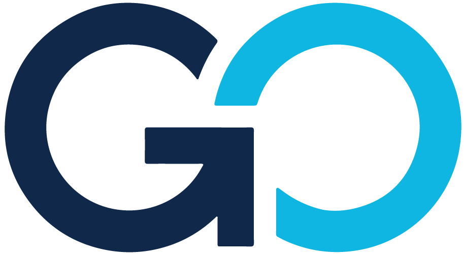

Fuse.Cloud × Rev.io
A transparent evaluation of the path from Classic Rev.io and a fragmented operating stack to one modern PSA—grounded in what is available now, what has a committed date, and what still must be proven.
One technology partner for IT, connectivity, communications, and security.
Regional reach, complex delivery
Jackson-based Fuse.Cloud supports customers across the Southeast with distributed staff and complex, multi-location deployments spanning managed IT, voice, internet, and security.
Already built on Rev.io
Classic Rev.io supports billing, orders, inventory, and ticketing today. Rev.io Payments processes roughly $265K per month, making this both a PSA expansion and a strategic retention decision.
A rigorous buying process
Fuse issued a live-demo requirements document to multiple vendors. “Must Have” credit is reserved for generally available functionality—not promises, prototypes, or future-ware.
Source basis: Fuse.Cloud public website; Rev.io discovery and demo notes through October 2, 2026.
The destination is clear. The risk is crossing the gap before the critical bridges are finished.
Quote-to-fulfillment breaks
Quotes can create tickets and pending recurring services, but projects are created manually, scope does not flow cleanly downstream, and project managers lack visibility into pending services.
Orders parity is the gate
The Classic Rev.io Orders module is Fuse’s number-one priority. Without equivalent operational control in PSA Web, migration creates regression rather than consolidation.
Service automation is incomplete
Round-robin and intelligent triage, automatic SLA resumption, structured escalations, and full event-driven workflows remain incomplete or unconfirmed.
Revenue can leak
License and agreement reconciliation is not yet a complete native workflow. NinjaOne helps, while broader coverage depends on the planned Commerce Hub direction.
Required integrations remain open
ScalePad Lifecycle Manager, Backup Radar, Quoter, PRTG, call recordings, NiceReply, HubSpot reverse sync, and NinjaOne remote-session details require dates or proof.
The upside is material
A successful transition can consolidate service, projects, account management, billing reconciliation, reporting, mobile work, and profitability around shared Rev.io data.
Fuse’s stack is capable—but coordination, reconciliation, and customer context are distributed across too many tools.
Core operations
Classic Rev.io, Tigerpaw, NinjaOne, HubSpot, Quoter, Portal.io, Hudu, and Pax8 form the commercial and service backbone.
Service + lifecycle
Backup Radar, ScalePad Lifecycle Manager, Huntress, Axcient/Ninja backup, PRTG, NiceReply, and RMM workflows feed daily service delivery.
Voice + security
NetSapiens supports UCaaS; Alarm.com and CMS support security monitoring; GPS Insights/ClearPath supports field visibility.
Where fragmentation shows
Projects, recurring services, assets, contracts, service tickets, customer communications, renewals, and billing exceptions cross platform boundaries.
What remains strategic
HubSpot remains the marketing platform. Best-of-breed infrastructure and security systems still need dependable integration rather than forced replacement.
What must consolidate
Duplicate PSA work, manual project creation, fragmented account context, spreadsheet-style reconciliation, and disconnected profitability reporting.
One operational thread from customer and quote to delivery, support, renewal, reconciliation, and insight.
Sell
HubSpot handoff, multi-site accounts, distributor catalogs, margin controls, approvals, proposals, and renewals.
Fulfill
Orders become projects, tickets, assets, procurement, recurring services, and billing schedules without rekeying.
Serve
Fast ticketing, SLA control, dispatch, mobile work, intelligent triage, escalations, and customer communication.
Reconcile
NinjaOne and vendor data identify asset, license, and agreement variances before they become leakage.
Improve
Live BI, SQL access, Revy-assisted analysis, profitability, utilization, root cause, and proactive alerts.
Strong fit demonstrated
Configurable ticket views, bulk actions, activity templates, mobile parity, dispatch, SLA policies, agreements, live BI, SQL Lab, Revy, NinjaOne, and open API.
Dependent on dated delivery
Orders, non-stock catalog items, intelligent triage, unified portal, parent/child portal support, MCP, and enhanced NetSapiens sync.
Still requires proof
ScalePad LCM, Backup Radar, Quoter, quote approvals, project templates, full reconciliation, reverse HubSpot sync, PRTG, and call-recording workflow.
A credible decision separates demonstrated capability from dated commitments and open questions.
Generally available / demonstrated
- Ticket views, inline and bulk editing, templates, linking, merging, time tracking
- Configurable SLAs, dispatch, recurring tickets, calendar sync, mobile/offline access
- Agreements, proration, profitability, customer portal basics
- Live dashboards, SQL Lab, Revy analytics, scheduled and threshold reporting
- Deep NinjaOne asset and draft-quote workflows
Dated commitments
- Orders module — October 31, 2026
- MCP support — end of October
- Unified portal and enhanced NetSapiens sync — next 1–2 releases
- Non-stock distributor catalog queries — approximately December
- Intelligent triage — Q4 2026 to early Q1 2027
Roadmap without firm date
- ScalePad Lifecycle Manager
- Reusable project templates
- Integrated project-level client messaging
- Event-based workflow actions
- Broader agreement reconciliation
- Custom-branded unified portal capabilities
Open / must confirm
- Backup Radar, Quoter, PRTG, NiceReply, and call recording
- HubSpot reverse sync and account-manager search visibility
- Pax8 user details, SureWeb scope, API limits, inventory min/max
- Product images and NinjaOne remote-session release status
The win is not a new PSA login. It is measurable control across the entire customer lifecycle.
Protect revenue
Detect agreement, asset, and license mismatches; automate renewals and proration; reduce missed recurring services and billing exceptions.
Improve service economics
Measure contract profitability, SLA performance, engineer utilization, resource distribution, root cause, and customer health in real time.
Accelerate operations
Reduce duplicate entry and manual project setup while giving sales, service, voice, projects, billing, and leadership one shared account context.
Modernize technician work
Fast configurable queues, mobile parity, offline access, scheduling, communication, activity templates, AI-assisted notes, and clear handoffs.
Support multi-site growth
Parent-child account structures, location-aware quoting, dispatch, service history, assets, agreements, and consolidated reporting fit Fuse’s delivery model.
Retain strategic payments
A credible PSA path strengthens the broader Rev.io relationship while protecting approximately $265K in monthly payment volume from a competing offer.
Quantified ROI should follow baseline validation for project setup time, billing exceptions, reconciliation leakage, ticket touches, utilization, renewal effort, and tool costs.
Win with evidence, dates, ownership, and a migration plan—not another feature promise.
1. Publish the open-items ledger
Map all 27 Must Haves and the 42 logged gaps to GA, committed date, roadmap, workaround, owner, and proof link. Keep the status current and buyer-visible.
2. Pass the October 31 credibility test
Demonstrate Orders in production against Fuse’s real workflow: quote, fulfillment, project, inventory, recurring service, invoice, and change-order control.
3. Close technical follow-ups
Provide dates and documentation for ScalePad, Backup Radar, Quoter, PRTG, HubSpot reverse sync, NinjaOne remote access, Pax8 detail, API limits, and portal scope.
4. Prove migration and coexistence
Define the migration depth from Classic Rev.io and Tigerpaw, the phased cutover, data reconciliation, rollback controls, and how HubSpot and specialist tools coexist.
5. Lock commercials
Finalize pricing for approximately 40 users and document the pay-when-delivered addendum so commercial obligations align with required capability.
6. Establish decision gates
Agree on a scored acceptance review after Orders, integration validation, migration proof, and a quantified business case. No future-ware gets counted early.